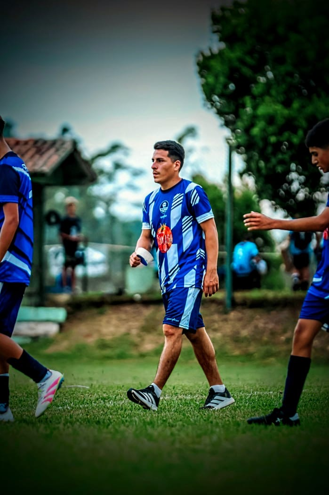
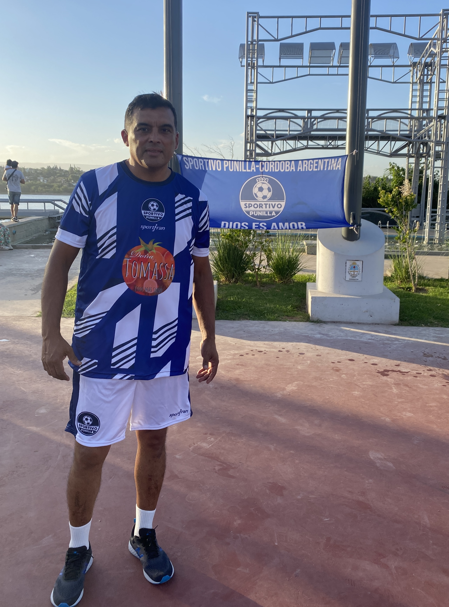

Convocatoria y Selección
- Llamado abierto vía redes sociales para talentos de toda la región.
- Buscamos compromiso y nivel para vestir nuestra camiseta.
.JPG)
Competí en Brasil representando a Sportivo Punilla.
CONOCER MÁSSportivo Punilla es una selección formada por jugadores de distintas localidades que comparten una misma pasión: vivir el fútbol de una manera diferente.
Desde hace más de 6 años realizamos pruebas abiertas y viajes deportivos a distintos puntos de Brasil, brindando la posibilidad de competir, crecer y vivir experiencias inolvidables dentro y fuera de la cancha.
Creemos en la unión, el sacrificio, la pasión y la hermandad como pilares fundamentales de cada viaje.

Donde se forja el equipo.
Partidos de exigencia para medir el nivel, aceitar el juego colectivo y ganar ritmo de competencia internacional.
No vamos solo de paseo. El objetivo es representar a Punilla con orgullo y competir de igual a igual contra clubes locales.
Días
Horas
Minutos
Segundos

Coordinador General y Director Técnico
Click para conocer más
Coordinador General y Director Técnico
Click para conocer más
Entrenador de Arqueros y Prensa
Click para conocer másInstagram: @sportivopunilla2025
YouTube: Sportivo Punilla
Contacto: 3515941466
Hola mi nombre es Lautaro Rodrigo Agustin Perez. Tengo 17 años y nací el 1ero de julio del 2008. Soy actual jugador del Club Atlético Carlos Paz y estoy cursando mi último año de secundaria, donde tuve la especialidad de robótica. Actualmente también estoy realizando un curso de entrenador de arqueros. Fui parte de Sportivo anteriormente desde la perspectiva de un jugador, y puedo decir que realmente es una experiencia que vale la pena vivir.